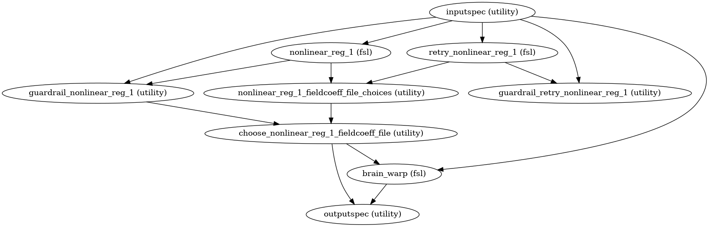
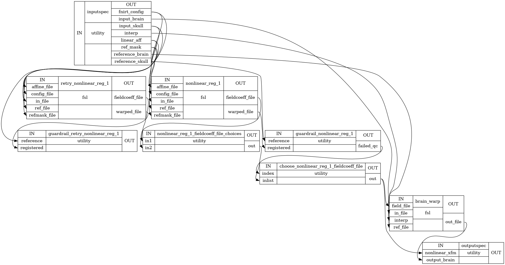
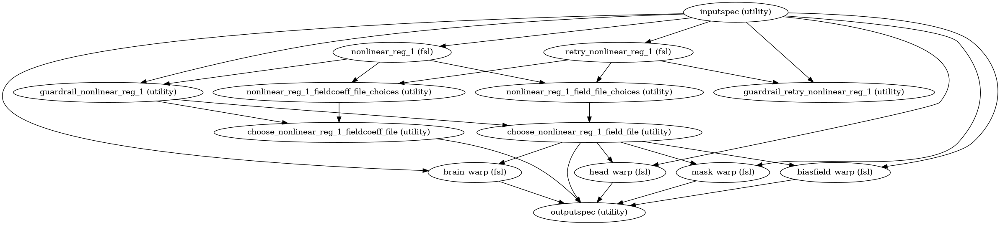
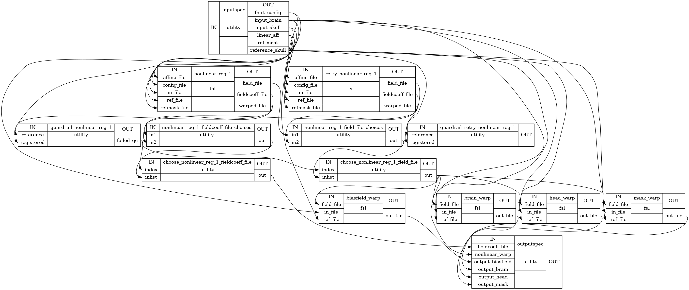
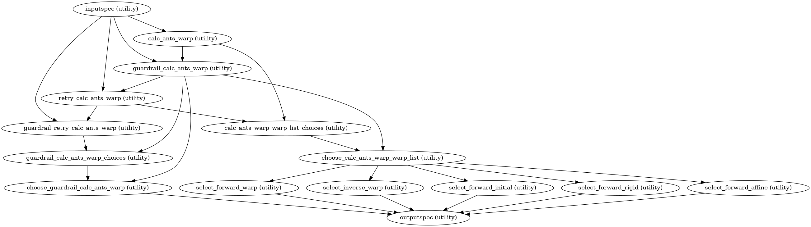
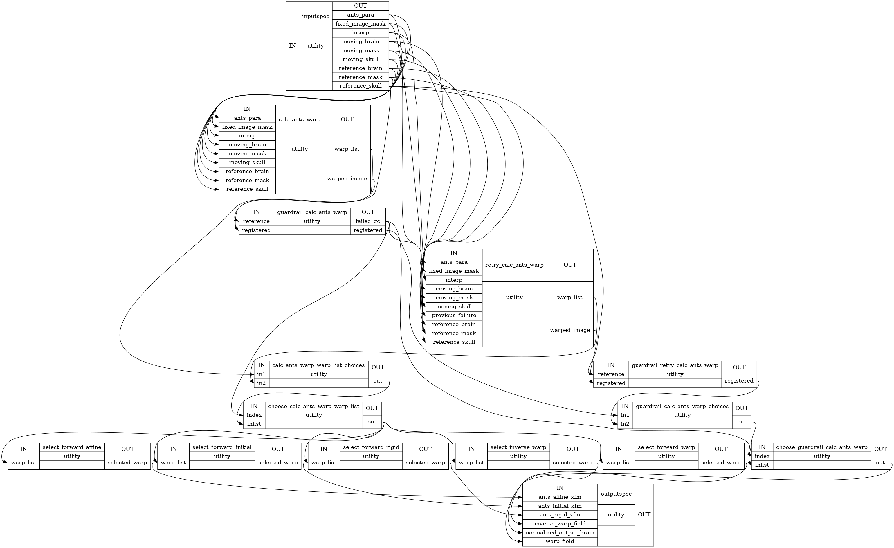

Registration¶
Registration functions
- CPAC.registration.registration.convert_pedir(pedir)[source]¶
FSL Flirt requires pedir input encoded as an int
- CPAC.registration.registration.coregistration(wf, cfg, strat_pool, pipe_num, opt=None)[source]¶
- {“name”: “coregistration”,
- “config”: [“registration_workflows”, “functional_registration”,
“coregistration”],
“switch”: [“run”], “option_key”: [“boundary_based_registration”, “run”], “option_val”: [True, False, “fallback”], “inputs”: [(“desc-reginput_bold”,
“desc-motion_bold”, “space-bold_label-WM_mask”, “despiked-fieldmap”, “fieldmap-mask”, “effectiveEchoSpacing”, “diffphase-pedir”),
- (“desc-brain_T1w”,
“desc-restore-brain_T1w”, “desc-preproc_T2w”, “desc-brain_T2w”, “T2w”, [“label-WM_probseg”, “label-WM_mask”], [“label-WM_pveseg”, “label-WM_mask”], “T1w”)],
- “outputs”: [“space-T1w_desc-mean_bold”,
“from-bold_to-T1w_mode-image_desc-linear_xfm”, “from-bold_to-T1w_mode-image_desc-linear_warp”]}
- CPAC.registration.registration.coregistration_prep_fmriprep(wf, cfg, strat_pool, pipe_num, opt=None)[source]¶
- {“name”: “coregistration_prep_fmriprep”,
- “config”: [“registration_workflows”, “functional_registration”,
“coregistration”],
“switch”: [“run”], “option_key”: [“func_input_prep”, “input”], “option_val”: “fmriprep_reference”, “inputs”: [“desc-ref_bold”], “outputs”: [“desc-reginput_bold”]}
- CPAC.registration.registration.coregistration_prep_mean(wf, cfg, strat_pool, pipe_num, opt=None)[source]¶
- {“name”: “coregistration_prep_mean”,
- “config”: [“registration_workflows”, “functional_registration”,
“coregistration”],
“switch”: [“run”], “option_key”: [“func_input_prep”, “input”], “option_val”: “Mean_Functional”, “inputs”: [“desc-mean_bold”], “outputs”: [“desc-reginput_bold”]}
- CPAC.registration.registration.coregistration_prep_vol(wf, cfg, strat_pool, pipe_num, opt=None)[source]¶
- {“name”: “coregistration_prep_vol”,
- “config”: [“registration_workflows”, “functional_registration”,
“coregistration”],
“switch”: [“run”], “option_key”: [“func_input_prep”, “input”], “option_val”: “Selected_Functional_Volume”, “inputs”: [(“desc-brain_bold”,
[“desc-motion_bold”, “bold”], “desc-reginput_bold”)],
“outputs”: [“desc-reginput_bold”]}
- CPAC.registration.registration.create_bbregister_func_to_anat(phase_diff_distcor=False, name='bbregister_func_to_anat', retry=False)[source]¶
Registers a functional scan in native space to structural. This is meant to be used after create_nonlinear_register() has been run and relies on some of its outputs.
- Parameters
- fieldmap_distortionbool, optional
If field map-based distortion correction is being run, FLIRT should take in the appropriate field map-related inputs.
- namestring, optional
Name of the workflow.
- retrybool
Is this a second attempt?
- Returns
- register_func_to_anatnipype.pipeline.engine.Workflow
Notes
Workflow Inputs:
inputspec.func : string (nifti file) Input functional scan to be registered to MNI space inputspec.anat : string (nifti file) Corresponding full-head or brain scan of subject inputspec.linear_reg_matrix : string (mat file) Affine matrix from linear functional to anatomical registration inputspec.anat_wm_segmentation : string (nifti file) White matter segmentation probability mask in anatomical space inputspec.bbr_schedule : string (.sch file) Boundary based registration schedule file for flirt command
Workflow Outputs:
outputspec.func_to_anat_linear_xfm : string (mat file) Affine transformation from functional to anatomical native space outputspec.anat_func : string (nifti file) Functional data in anatomical space
- CPAC.registration.registration.create_fsl_fnirt_nonlinear_reg(name='fsl_fnirt_nonlinear_reg')[source]¶
Performs non-linear registration of an input file to a reference file using FSL FNIRT.
- Parameters
- namestring, optional
Name of the workflow.
- Returns
- nonlinear_registernipype.pipeline.engine.Workflow
Notes
Workflow Inputs:
inputspec.input_skull : string (nifti file) File of input brain with skull inputspec.reference_skull : string (nifti file) Target brain with skull to normalize to inputspec.fnirt_config : string (fsl fnirt config file) Configuration file containing parameters that can be specified in fnirt
Workflow Outputs:
outputspec.output_brain : string (nifti file) Normalizion of input brain file outputspec.nonlinear_xfm : string Nonlinear field coefficients file of nonlinear transformation
Registration Procedure:
Perform a nonlinear registration on an input file to the reference file utilizing affine transformation from the previous step as a starting point.
Invert the affine transformation to provide the user a transformation (affine only) from the space of the reference file to the input file.
Workflow Graph:

Detailed Workflow Graph:

{kind=link}
{kind=link}
- CPAC.registration.registration.create_fsl_fnirt_nonlinear_reg_nhp(name='fsl_fnirt_nonlinear_reg_nhp')[source]¶
Performs non-linear registration of an input file to a reference file using FSL FNIRT.
- Parameters
- namestring, optional
Name of the workflow.
- Returns
- nonlinear_registernipype.pipeline.engine.Workflow
Notes
Workflow Inputs:
inputspec.input_skull : string (nifti file) File of input brain with skull inputspec.reference_skull : string (nifti file) Target brain with skull to normalize to inputspec.fnirt_config : string (fsl fnirt config file) Configuration file containing parameters that can be specified in fnirt
Workflow Outputs:
outputspec.output_brain : string (nifti file) Normalizion of input brain file outputspec.nonlinear_xfm : string Nonlinear field coefficients file of nonlinear transformation outputspec.nonlinear_warp : string Nonlinear output file with warp field
Registration Procedure:
Perform a nonlinear registration on an input file to the reference file utilizing affine transformation from the previous step as a starting point.
Invert the affine transformation to provide the user a transformation (affine only) from the space of the reference file to the input file.
Workflow Graph:

Detailed Workflow Graph:

{kind=link}
{kind=link}
- CPAC.registration.registration.create_func_to_T1template_symmetric_xfm(wf, cfg, strat_pool, pipe_num, opt=None)[source]¶
Condense the BOLD-to-T1 coregistration transform and the T1-to- symmetric-template transform into one transform matrix.
Node Block: {“name”: “create_func_to_T1template_symmetric_xfm”,
- “config”: [“registration_workflows”, “functional_registration”,
“func_registration_to_template”],
“switch”: [“run”], “option_key”: [“target_template”, “using”], “option_val”: “T1_template”, “inputs”: [(“from-T1w_to-symtemplate_mode-image_xfm”,
“from-symtemplate_to-T1w_mode-image_xfm”, “desc-brain_T1w”),
- (“from-bold_to-T1w_mode-image_desc-linear_xfm”,
“desc-mean_bold”),
“T1w-brain-template-symmetric-deriv”],
- “outputs”: [“from-bold_to-symtemplate_mode-image_xfm”,
“from-symtemplate_to-bold_mode-image_xfm”]}
- CPAC.registration.registration.create_func_to_T1template_xfm(wf, cfg, strat_pool, pipe_num, opt=None)[source]¶
Condense the BOLD-to-T1 coregistration transform and the T1-to-template transform into one transform matrix.
Node Block: {“name”: “create_func_to_T1template_xfm”,
- “config”: [“registration_workflows”, “functional_registration”,
“func_registration_to_template”],
“switch”: [“run”], “option_key”: [“target_template”, “using”], “option_val”: “T1_template”, “inputs”: [(“desc-reginput_bold”,
“from-bold_to-T1w_mode-image_desc-linear_xfm”),
- (“from-T1w_to-template_mode-image_xfm”,
“from-template_to-T1w_mode-image_xfm”, “desc-brain_T1w”),
“T1w-brain-template-funcreg”],
- “outputs”: [“from-bold_to-template_mode-image_xfm”,
“from-template_to-bold_mode-image_xfm”]}
- CPAC.registration.registration.create_register_func_to_anat(config, phase_diff_distcor=False, name='register_func_to_anat')[source]¶
Registers a functional scan in native space to anatomical space using a linear transform and does not include bbregister.
- Parameters
- configconfiguration, mandatory
Pipeline configuration.
- fieldmap_distortionbool, optional
If field map-based distortion correction is being run, FLIRT should take in the appropriate field map-related inputs.
- namestring, optional
Name of the workflow.
- Returns
- create_register_func_to_anatnipype.pipeline.engine.Workflow
Notes
Workflow Inputs:
inputspec.func : string (nifti file) Input functional scan to be registered to anatomical space inputspec.anat : string (nifti file) Corresponding anatomical scan of subject inputspec.interp : string Type of interpolation to use ('trilinear' or 'nearestneighbour' or 'sinc')
Workflow Outputs:
outputspec.func_to_anat_linear_xfm_nobbreg : string (mat file) Affine transformation from functional to anatomical native space outputspec.anat_func_nobbreg : string (nifti file) Functional scan registered to anatomical space
- CPAC.registration.registration.create_register_func_to_anat_use_T2(name='register_func_to_anat_use_T2')[source]¶
Registers a functional scan in native space to anatomical space using a linear transform and does not include bbregister, use T1 and T2 image.
- Parameters
- namestring, optional
Name of the workflow.
- Returns
- create_register_func_to_anat_use_T2nipype.pipeline.engine.Workflow
Notes
Workflow Inputs:
inputspec.func : string (nifti file) Input functional scan to be registered to anatomical space inputspec.anat : string (nifti file) Corresponding anatomical scan of subject
Workflow Outputs:
outputspec.func_to_anat_linear_xfm_nobbreg : string (mat file) Affine transformation from functional to anatomical native space outputspec.anat_func_nobbreg : string (nifti file) Functional scan registered to anatomical space
- CPAC.registration.registration.create_wf_calculate_ants_warp(name='create_wf_calculate_ants_warp', num_threads=1, reg_ants_skull=1)[source]¶
Calculates the nonlinear ANTS registration transform. This workflow employs the antsRegistration tool:
- Parameters
- namestring, optional
Name of the workflow.
- Returns
- calc_ants_warp_wfnipype.pipeline.engine.Workflow
Notes
Some of the inputs listed below are lists or lists of lists. This is because antsRegistration can perform multiple stages of calculations depending on how the user configures their registration.
For example, if one wants to employ a different metric (with different parameters) at each stage, the lists would be configured like this:
warp_wf.inputs.inputspec.transforms = [‘Rigid’,’Affine’,’SyN’] warp_wf.inputs.inputspec.transform_parameters = [[0.1],[0.1],[0.1,3,0]]
..where each element in the first list is a metric to be used at each stage, ‘Rigid’ being for stage 1, ‘Affine’ for stage 2, etc. The lists within the list for transform_parameters would then correspond to each stage’s metric, with [0.1] applying to ‘Rigid’ and ‘Affine’ (stages 1 and 2), and [0.1,3,0] applying to ‘SyN’ of stage 3.
In some cases, when a parameter is not needed for a stage, ‘None’ must be entered in its place if there are other parameters for other stages.
Workflow Inputs:
inputspec.moving_brain : string (nifti file) File of brain to be normalized (registered) inputspec.reference_brain : string (nifti file) Target brain file to normalize to inputspec.dimension : integer Dimension of the image (default: 3) inputspec.use_histogram_matching : boolean Histogram match the images before registration inputspec.winsorize_lower_quantile : float Winsorize data based on quantiles (lower range) inputspec.winsorize_higher_quantile : float Winsorize data based on quantiles (higher range) inputspec.metric : list of strings Image metric(s) to be used at each stage inputspec.metric_weight : list of floats Modulate the per-stage weighting of the corresponding metric inputspec.radius_or_number_of_bins : list of integers Number of bins in each stage for the MI and Mattes metric, the radius for other metrics inputspec.sampling_strategy : list of strings Sampling strategy (or strategies) to use for the metrics {None, Regular, or Random} inputspec.sampling_percentage : list of floats Defines the sampling strategy {float value, or None} inputspec.number_of_iterations : list of lists of integers Determines the convergence inputspec.convergence_threshold : list of floats Threshold compared to the slope of the line fitted in convergence inputspec.convergence_window_size : list of integers Window size of convergence calculations inputspec.transforms : list of strings Selection of transform options. See antsRegistration documentation for a full list of options and their descriptions inputspec.transform_parameters : list of lists of floats Fine-tuning for the different transform options inputspec.shrink_factors : list of lists of integers Specify the shrink factor for the virtual domain (typically the fixed image) at each level inputspec.smoothing_sigmas : list of lists of floats Specify the sigma of gaussian smoothing at each level inputspec.fixed_image_mask: (an existing file name) Mask used to limit metric sampling region of the fixed imagein all stages inputspec.interp : string Type of interpolation to use ('Linear' or 'BSpline' or 'LanczosWindowedSinc')
Workflow Outputs:
outputspec.warp_field : string (nifti file) Output warp field of registration outputspec.inverse_warp_field : string (nifti file) Inverse of the warp field of the registration outputspec.ants_affine_xfm : string (.mat file) The affine matrix of the registration outputspec.ants_inverse_affine_xfm : string (.mat file) The affine matrix of the reverse registration outputspec.composite_transform : string (nifti file) The combined transform including the warp field and rigid & affine linear warps outputspec.normalized_output_brain : string (nifti file) Template-registered version of input brain
Registration Procedure:
Calculates a nonlinear anatomical-to-template registration.
Workflow Graph:

Detailed Workflow Graph:

{kind=link}
{kind=link}
- CPAC.registration.registration.overwrite_transform_anat_to_template(wf, cfg, strat_pool, pipe_num, opt=None)[source]¶
- {“name”: “overwrite_transform_anat_to_template”,
“config”: “None”, “switch”: [[“registration_workflows”, “anatomical_registration”, “run”],
- [“registration_workflows”, “anatomical_registration”,
“overwrite_transform”, “run”]],
- “option_key”: [“registration_workflows”, “anatomical_registration”,
“overwrite_transform”, “using”],
“option_val”: “FSL”, “inputs”: [(“desc-restore-brain_T1w”,
[“desc-brain_T1w”, “space-longitudinal_desc-brain_T1w”], [“desc-restore_T1w”, “desc-preproc_T1w”, “desc-reorient_T1w”,
“T1w”],
[“desc-preproc_T1w”, “desc-reorient_T1w”, “T1w”], “space-T1w_desc-brain_mask”, “T1w-template”, “from-T1w_to-template_mode-image_xfm”, “from-template_to-T1w_mode-image_xfm”, “space-template_desc-brain_T1w”)],
- “outputs”: [“space-template_desc-brain_T1w”,
“space-template_desc-head_T1w”, “space-template_desc-T1w_mask”, “from-T1w_to-template_mode-image_xfm”, “from-template_to-T1w_mode-image_xfm”]}
- CPAC.registration.registration.register_ANTs_EPI_to_template(wf, cfg, strat_pool, pipe_num, opt=None)[source]¶
Directly register the mean functional to an EPI template. No T1w involved.
Node Block: {“name”: “register_ANTs_EPI_to_template”,
- “config”: [“registration_workflows”, “functional_registration”,
“EPI_registration”],
“switch”: [“run”], “option_key”: “using”, “option_val”: “ANTS”, “inputs”: [([“desc-reginput_bold”, “desc-mean_bold”],
“space-bold_desc-brain_mask”),
“EPI-template”, “EPI-template-mask”],
- “outputs”: [“space-EPItemplate_desc-brain_bold”,
“from-bold_to-EPItemplate_mode-image_desc-linear_xfm”, “from-EPItemplate_to-bold_mode-image_desc-linear_xfm”, “from-bold_to-EPItemplate_mode-image_desc-nonlinear_xfm”, “from-EPItemplate_to-bold_mode-image_desc-nonlinear_xfm”, “from-bold_to-EPItemplate_mode-image_xfm”, “from-EPItemplate_to-bold_mode-image_xfm”]}
- CPAC.registration.registration.register_ANTs_anat_to_template(wf, cfg, strat_pool, pipe_num, opt=None)[source]¶
Node Block: {“name”: “register_ANTs_anat_to_template”,
“config”: [“registration_workflows”, “anatomical_registration”], “switch”: [“run”], “option_key”: [“registration”, “using”], “option_val”: “ANTS”, “inputs”: [([“desc-brain_T1w”, “space-longitudinal_desc-brain_T1w”],
- [“space-T1w_desc-brain_mask”,
“space-longitudinal_desc-brain_mask”, “space-T1w_desc-acpcbrain_mask”],
- [“desc-restore_T1w”, “desc-preproc_T1w”, “desc-reorient_T1w”, “T1w”,
“space-longitudinal_desc-reorient_T1w”]),
“T1w-template”, “T1w-brain-template”, “T1w-brain-template-mask”, “label-lesion_mask”],
- “outputs”: {“space-template_desc-brain_T1w”: {
- “Description”: “The preprocessed T1w brain transformed “
“to template space.”,
“Template”: “T1w-template”},
- “from-T1w_to-template_mode-image_desc-linear_xfm”: {
- “Description”: “Linear (affine) transform from T1w native”
” space to T1w-template space.”},
- “from-template_to-T1w_mode-image_desc-linear_xfm”: {
- “Description”: “Linear (affine) transform from T1w-”
“template space to T1w native space.”},
- “from-T1w_to-template_mode-image_desc-nonlinear_xfm”: {
- “Description”: “Nonlinear (warp field) transform from “
“T1w native space to T1w-template space.”},
- “from-template_to-T1w_mode-image_desc-nonlinear_xfm”: {
- “Description”: “Nonlinear (warp field) transform from “
“T1w-template space to T1w native space.”},
- “from-T1w_to-template_mode-image_xfm”: {
- “Description”: “Composite (affine + warp field) “
“transform from T1w native space to T1w-” “template space.”},
- “from-template_to-T1w_mode-image_xfm”: {
- “Description”: “Composite (affine + warp field) “
“transform from T1w-template space to T1w ” “native space.”},
- “from-longitudinal_to-template_mode-image_desc-linear_xfm”: {
- “Description”: “Linear (affine) transform from “
“longitudinal-template space to T1w-” “template space.”},
- “from-template_to-longitudinal_mode-image_desc-linear_xfm”: {
- “Description”: “Linear (affine) transform from T1w-”
“template space to longitudinal-template ” “space.”},
- “from-longitudinal_to-template_mode-image_desc-nonlinear_xfm”: {
- “Description”: “Nonlinear (warp field) transform from “
“longitudinal-template space to T1w-” “template space.”},
- “from-template_to-longitudinal_mode-image_desc-nonlinear_xfm”: {
- “Description”: “Nonlinear (warp field) transform from “
“T1w-template space to longitudinal-” “template space.”},
- “from-longitudinal_to-template_mode-image_xfm”: {
- “Description”: “Composite (affine + warp field) “
“transform from longitudinal-template ” “space to T1w-template space.”},
- “from-template_to-longitudinal_mode-image_xfm”: {
- “Description”: “Composite (affine + warp field) “
“transform from T1w-template space to ” “longitudinal-template space.”}}}
- CPAC.registration.registration.register_FSL_EPI_to_template(wf, cfg, strat_pool, pipe_num, opt=None)[source]¶
Directly register the mean functional to an EPI template. No T1w involved.
Node Block: {“name”: “register_FSL_EPI_to_template”,
- “config”: [“registration_workflows”, “functional_registration”,
“EPI_registration”],
“switch”: [“run”], “option_key”: “using”, “option_val”: [“FSL”, “FSL-linear”], “inputs”: [([“desc-reginput_bold”, “desc-mean_bold”],
“space-bold_desc-brain_mask”),
“EPI-template”, “EPI-template-mask”],
- “outputs”: [“space-EPItemplate_desc-brain_bold”,
“from-bold_to-EPItemplate_mode-image_desc-linear_xfm”, “from-EPItemplate_to-bold_mode-image_desc-linear_xfm”, “from-bold_to-EPItemplate_mode-image_xfm”]}
- CPAC.registration.registration.register_FSL_anat_to_template(wf, cfg, strat_pool, pipe_num, opt=None)[source]¶
- {“name”: “register_FSL_anat_to_template”,
“config”: [“registration_workflows”, “anatomical_registration”], “switch”: [“run”], “option_key”: [“registration”, “using”], “option_val”: [“FSL”, “FSL-linear”], “inputs”: [([“desc-preproc_T1w”, “desc-reorient_T1w”, “T1w”,
“space-longitudinal_desc-reorient_T1w”],
[“desc-brain_T1w”, “space-longitudinal_desc-brain_T1w”]),
“T1w-template”, “T1w-brain-template”, “FNIRT-T1w-template”, “FNIRT-T1w-brain-template”, “template-ref-mask”],
- “outputs”: [“space-template_desc-brain_T1w”,
“space-template_desc-head_T1w”, “space-template_desc-T1w_mask”, “space-template_desc-T1wT2w_biasfield”, “from-T1w_to-template_mode-image_desc-linear_xfm”, “from-template_to-T1w_mode-image_desc-linear_xfm”, “from-T1w_to-template_mode-image_xfm”, “from-T1w_to-template_mode-image_warp”, “from-longitudinal_to-template_mode-image_desc-linear_xfm”, “from-template_to-longitudinal_mode-image_desc-linear_xfm”, “from-longitudinal_to-template_mode-image_xfm”]}
- CPAC.registration.registration.register_symmetric_ANTs_anat_to_template(wf, cfg, strat_pool, pipe_num, opt=None)[source]¶
- {“name”: “register_symmetric_ANTs_anat_to_template”,
“config”: [“registration_workflows”, “anatomical_registration”], “switch”: [“run”], “option_key”: [“registration”, “using”], “option_val”: “ANTS”, “inputs”: [([“desc-brain_T1w”, “space-longitudinal_desc-brain_T1w”],
- [“space-T1w_desc-brain_mask”,
“space-longitudinal_desc-brain_mask”],
- [“desc-preproc_T1w”, “desc-reorient_T1w”, “T1w”,
“space-longitudinal_desc-reorient_T1w”]),
“T1w-template-symmetric”, “T1w-brain-template-symmetric”, “dilated-symmetric-brain-mask”, “label-lesion_mask”],
- “outputs”: [“space-symtemplate_desc-brain_T1w”,
“from-T1w_to-symtemplate_mode-image_desc-linear_xfm”, “from-symtemplate_to-T1w_mode-image_desc-linear_xfm”, “from-T1w_to-symtemplate_mode-image_desc-nonlinear_xfm”, “from-symtemplate_to-T1w_mode-image_desc-nonlinear_xfm”, “from-T1w_to-symtemplate_mode-image_xfm”, “from-symtemplate_to-T1w_mode-image_xfm”, “from-longitudinal_to-symtemplate_mode-image_desc-linear_xfm”, “from-symtemplate_to-longitudinal_mode-image_desc-linear_xfm”, “from-longitudinal_to-symtemplate_mode-image_desc-nonlinear_xfm”, “from-symtemplate_to-longitudinal_mode-image_desc-nonlinear_xfm”, “from-longitudinal_to-symtemplate_mode-image_xfm”, “from-symtemplate_to-longitudinal_mode-image_xfm”]}
- CPAC.registration.registration.register_symmetric_FSL_anat_to_template(wf, cfg, strat_pool, pipe_num, opt=None)[source]¶
- {“name”: “register_symmetric_FSL_anat_to_template”,
“config”: [“registration_workflows”, “anatomical_registration”], “switch”: [“run”], “option_key”: [“registration”, “using”], “option_val”: [“FSL”, “FSL-linear”], “inputs”: [([“desc-preproc_T1w”, “desc-reorient_T1w”, “T1w”,
“space-longitudinal_desc-reorient_T1w”],
[“desc-brain_T1w”, “space-longitudinal_desc-brain_T1w”]),
“T1w-template-symmetric”, “T1w-brain-template-symmetric”, “dilated-symmetric-brain-mask”],
- “outputs”: [“space-symtemplate_desc-brain_T1w”,
“from-T1w_to-symtemplate_mode-image_desc-linear_xfm”, “from-symtemplate_to-T1w_mode-image_desc-linear_xfm”, “from-T1w_to-symtemplate_mode-image_xfm”, “from-longitudinal_to-symtemplate_mode-image_desc-linear_xfm”, “from-symtemplate_to-longitudinal_mode-image_desc-linear_xfm”, “from-longitudinal_to-symtemplate_mode-image_xfm”]}
- CPAC.registration.registration.single_step_resample_timeseries_to_T1template(wf, cfg, strat_pool, pipe_num, opt=None)[source]¶
Apply motion correction, coreg, anat-to-template transforms on slice-time corrected functional timeseries based on fMRIPrep pipeline
Copyright (c) 2015-2018, the CRN developers team. All rights reserved.
Redistribution and use in source and binary forms, with or without modification, are permitted provided that the following conditions are met:
Redistributions of source code must retain the above copyright
notice, this list of conditions and the following disclaimer.
Redistributions in binary form must reproduce the above copyright
notice, this list of conditions and the following disclaimer in the documentation and/or other materials provided with the distribution.
Neither the name of fmriprep nor the names of its contributors
may be used to endorse or promote products derived from this software without specific prior written permission.
THIS SOFTWARE IS PROVIDED BY THE COPYRIGHT HOLDERS AND CONTRIBUTORS “AS IS” AND ANY EXPRESS OR IMPLIED WARRANTIES, INCLUDING, BUT NOT LIMITED TO, THE IMPLIED WARRANTIES OF MERCHANTABILITY AND FITNESS FOR A PARTICULAR PURPOSE ARE DISCLAIMED. IN NO EVENT SHALL THE COPYRIGHT HOLDER OR CONTRIBUTORS BE LIABLE FOR ANY DIRECT, INDIRECT, INCIDENTAL, SPECIAL, EXEMPLARY, OR CONSEQUENTIAL DAMAGES (INCLUDING, BUT NOT LIMITED TO, PROCUREMENT OF SUBSTITUTE GOODS OR SERVICES; LOSS OF USE, DATA, OR PROFITS; OR BUSINESS INTERRUPTION) HOWEVER CAUSED AND ON ANY THEORY OF LIABILITY, WHETHER IN CONTRACT, STRICT LIABILITY, OR TORT (INCLUDING NEGLIGENCE OR OTHERWISE) ARISING IN ANY WAY OUT OF THE USE OF THIS SOFTWARE, EVEN IF ADVISED OF THE POSSIBILITY OF SUCH DAMAGE.
Ref: https://github.com/nipreps/fmriprep/blob/84a6005b/fmriprep/workflows/bold/resampling.py#L159-L419
Node Block: {“name”: “single_step_resample_stc_timeseries_to_T1template”,
- “config”: [“registration_workflows”, “functional_registration”,
“func_registration_to_template”],
“switch”: [“run”], “option_key”: [“apply_transform”, “using”], “option_val”: “single_step_resampling_from_stc”, “inputs”: [([“desc-reginput_bold”, “desc-mean_bold”],
“desc-stc_bold”, “motion-basefile”, “space-bold_desc-brain_mask”, “coordinate-transformation”, “from-T1w_to-template_mode-image_xfm”, “from-bold_to-T1w_mode-image_desc-linear_xfm”, “from-bold_to-template_mode-image_xfm”, “T1w”, “desc-brain_T1w”, “T1w-brain-template-funcreg”)],
- “outputs”: [“space-template_desc-preproc_bold”,
“space-template_desc-brain_bold”, “space-template_desc-bold_mask”]}
- CPAC.registration.registration.transform_derivative(wf_name, label, reg_tool, num_cpus, num_ants_cores, ants_interp=None, fsl_interp=None, opt=None)[source]¶
Transform output derivatives to template space.
This function is designed for use with the NodeBlock connection engine. This function is not guardrailed.
- CPAC.registration.registration.warp_bold_mask_to_EPItemplate(wf, cfg, strat_pool, pipe_num, opt=None)[source]¶
Node Block: {“name”: “transform_bold_mask_to_EPItemplate”,
- “config”: [“registration_workflows”, “functional_registration”,
“func_registration_to_template”],
“switch”: [“run_EPI”], “option_key”: “None”, “option_val”: “None”, “inputs”: [(“space-bold_desc-brain_mask”,
“from-bold_to-EPItemplate_mode-image_xfm”),
“EPI-template”],
“outputs”: [“space-EPItemplate_desc-bold_mask”]}
- CPAC.registration.registration.warp_bold_mask_to_T1template(wf, cfg, strat_pool, pipe_num, opt=None)[source]¶
Node Block: {“name”: “transform_bold_mask_to_T1template”,
“config”: “None”, “switch”: [[“registration_workflows”, “functional_registration”,
“func_registration_to_template”, “run”],
[“registration_workflows”, “anatomical_registration”, “run”]],
- “option_key”: [“registration_workflows”, “functional_registration”,
“func_registration_to_template”, “apply_transform”, “using”],
“option_val”: “default”, “inputs”: [(“space-bold_desc-brain_mask”,
“from-bold_to-template_mode-image_xfm”),
“T1w-brain-template-funcreg”],
“outputs”: [“space-template_desc-bold_mask”]}
- CPAC.registration.registration.warp_bold_mean_to_EPItemplate(wf, cfg, strat_pool, pipe_num, opt=None)[source]¶
Node Block: {“name”: “transform_bold_mean_to_EPItemplate”,
- “config”: [“registration_workflows”, “functional_registration”,
“func_registration_to_template”],
“switch”: [“run_EPI”], “option_key”: “None”, “option_val”: “None”, “inputs”: [(“desc-mean_bold”,
“from-bold_to-EPItemplate_mode-image_xfm”),
“EPI-template”],
“outputs”: [“space-EPItemplate_desc-mean_bold”]}
- CPAC.registration.registration.warp_bold_mean_to_T1template(wf, cfg, strat_pool, pipe_num, opt=None)[source]¶
Node Block: {“name”: “transform_bold_mean_to_T1template”,
“config”: “None”, “switch”: [[“registration_workflows”, “functional_registration”,
“func_registration_to_template”, “run”], [“functional_preproc”, “generate_func_mean”, “run”]],
“option_key”: “None”, “option_val”: “None”, “inputs”: [(“desc-mean_bold”,
“from-bold_to-template_mode-image_xfm”),
“T1w-brain-template-funcreg”],
- “outputs”: {
- “space-template_desc-mean_bold”: {
- “Description”: “Single-volume mean of the BOLD time-series “
“transformed to template space.”,
“Template”: “T1w-brain-template-funcreg”}}
}
- CPAC.registration.registration.warp_deriv_mask_to_EPItemplate(wf, cfg, strat_pool, pipe_num, opt=None)[source]¶
Transform the BOLD mask to template space and to the resolution set for the derivative outputs.
Node Block: {“name”: “transform_deriv_mask_to_EPItemplate”,
- “config”: [“registration_workflows”, “functional_registration”,
“func_registration_to_template”],
“switch”: [“run_EPI”], “option_key”: “None”, “option_val”: “None”, “inputs”: [(“space-bold_desc-brain_mask”,
“from-bold_to-EPItemplate_mode-image_xfm”),
“EPI-template”],
“outputs”: [“space-EPItemplate_res-derivative_desc-bold_mask”]}
- CPAC.registration.registration.warp_deriv_mask_to_T1template(wf, cfg, strat_pool, pipe_num, opt=None)[source]¶
Transform the BOLD mask to template space and to the resolution set for the derivative outputs.
Node Block: {“name”: “transform_deriv_mask_to_T1template”,
“config”: “None”, “switch”: [[“registration_workflows”, “functional_registration”,
“func_registration_to_template”, “run”], [“registration_workflows”, “anatomical_registration”, “run”]],
- “option_key”: [“registration_workflows”, “functional_registration”,
“func_registration_to_template”, “apply_transform”, “using”],
“option_val”: “default”, “inputs”: [(“space-bold_desc-brain_mask”,
“from-bold_to-template_mode-image_xfm”),
“T1w-brain-template-deriv”],
“outputs”: [“space-template_res-derivative_desc-bold_mask”]}
- CPAC.registration.registration.warp_resource_to_template(wf: CPAC.pipeline.nipype_pipeline_engine.engine.Workflow, cfg, strat_pool, pipe_num: int, input_resource: Union[list, str], xfm: str, reference: Optional[str] = None, time_series: Optional[bool] = False) → Tuple[CPAC.pipeline.nipype_pipeline_engine.engine.Workflow, CPAC.pipeline.nipype_pipeline_engine.engine.Workflow, str][source]¶
Function to warp a resource into a template space
- Parameters
- wfpe.Workflow
- cfgCPAC.utils.configuration.Configuration
- strat_poolCPAC.pipeline.engine.ResourcePool
- pipe_numint
- input_resourcestr or list
key for the resource to warp to template
- xfmstr
key for the transform to apply
- referencestr, optional
key for reference if not using f’{template_space}-template’
- time_seriesboolean, optional
resource to transform is 4D?
- Returns
- wfpe.Workflow
original workflow with subworkflow to warp resource to template connected
- apply_xfmpe.Workflow
subworkflow added to warp resource to template
- resourcestr
key of input resource in strat_pool
- CPAC.registration.registration.warp_timeseries_to_EPItemplate(wf, cfg, strat_pool, pipe_num, opt=None)[source]¶
Node Block: {“name”: “transform_timeseries_to_EPItemplate”,
- “config”: [“registration_workflows”, “functional_registration”,
“func_registration_to_template”],
“switch”: [“run_EPI”], “option_key”: “None”, “option_val”: “None”, “inputs”: [([“desc-preproc_bold”, “bold”],
“from-bold_to-EPItemplate_mode-image_xfm”),
“EPI-template”],
- “outputs”: [“space-EPItemplate_desc-cleaned_bold”,
“space-EPItemplate_desc-brain_bold”, “space-EPItemplate_desc-preproc_bold”, “space-EPItemplate_bold”]}
- CPAC.registration.registration.warp_timeseries_to_T1template(wf, cfg, strat_pool, pipe_num, opt=None)[source]¶
Node Block: {“name”: “transform_timeseries_to_T1template”,
- “config”: [“registration_workflows”, “functional_registration”,
“func_registration_to_template”],
“switch”: [“run”], “option_key”: [“apply_transform”, “using”], “option_val”: “default”, “inputs”: [([“desc-preproc_bold”, “desc-cleaned_bold”,
“desc-brain_bold”, “desc-motion_bold”, “bold”],
“from-bold_to-template_mode-image_xfm”),
“T1w-brain-template-funcreg”],
- “outputs”: [“space-template_desc-cleaned_bold”,
“space-template_desc-brain_bold”, “space-template_desc-preproc_bold”, “space-template_desc-motion_bold”, “space-template_bold”]}
- CPAC.registration.registration.warp_timeseries_to_T1template_abcd(wf, cfg, strat_pool, pipe_num, opt=None)[source]¶
- {“name”: “transform_timeseries_to_T1template_abcd”,
- “config”: [“registration_workflows”, “functional_registration”,
“func_registration_to_template”],
“switch”: [“run”], “option_key”: [“apply_transform”, “using”], “option_val”: “abcd”, “inputs”: [[“desc-cleaned_bold”, “desc-brain_bold”,
“desc-motion_bold”, “desc-preproc_bold”, “bold”],
“bold”, “motion-basefile”, “coordinate-transformation”, “from-T1w_to-template_mode-image_xfm”, “from-bold_to-T1w_mode-image_desc-linear_xfm”, “from-bold_to-template_mode-image_xfm”, “blip-warp”, “desc-preproc_T1w”, “space-template_res-bold_desc-brain_T1w”, “space-template_desc-bold_mask”, “T1w-brain-template-funcreg”],
- “outputs”: [“space-template_desc-brain_bold”,
“space-template_desc-scout_bold”, “space-template_desc-head_bold”]}
- CPAC.registration.registration.warp_timeseries_to_T1template_dcan_nhp(wf, cfg, strat_pool, pipe_num, opt=None)[source]¶
- {“name”: “transform_timeseries_to_T1template_dcan_nhp”,
- “config”: [“registration_workflows”, “functional_registration”,
“func_registration_to_template”],
“switch”: [“run”], “option_key”: [“apply_transform”, “using”], “option_val”: “dcan_nhp”, “inputs”: [([“desc-reorient_bold”, “bold”],
“coordinate-transformation”, “from-T1w_to-template_mode-image_warp”, “from-bold_to-T1w_mode-image_desc-linear_warp”, “space-template_desc-head_T1w”, “space-template_desc-T1w_mask”, “space-template_desc-T1wT2w_biasfield”)],
- “outputs”: [“space-template_desc-brain_bold”,
“space-template_desc-bold_mask”]}
- CPAC.registration.registration.warp_tissuemask_to_EPItemplate(wf, cfg, strat_pool, pipe_num, opt=None)[source]¶
Node Block: {“name”: “warp_tissuemask_to_EPItemplate”,
“config”: “None”, “switch”: [“registration_workflows”, “functional_registration”,
“EPI_registration”, “run”],
“option_key”: “None”, “option_val”: “None”, “inputs”: [(“label-CSF_mask”,
“label-WM_mask”, “label-GM_mask”, “from-bold_to-EPItemplate_mode-image_xfm”),
“EPI-template”],
- “outputs”: [“space-EPItemplate_label-CSF_mask”,
“space-EPItemplate_label-WM_mask”, “space-EPItemplate_label-GM_mask”]}
- CPAC.registration.registration.warp_tissuemask_to_T1template(wf, cfg, strat_pool, pipe_num, opt=None)[source]¶
Node Block: {“name”: “warp_tissuemask_to_T1template”,
“config”: “None”, “switch”: [“registration_workflows”, “anatomical_registration”, “run”], “option_key”: “None”, “option_val”: “None”, “inputs”: [(“label-CSF_mask”,
“label-WM_mask”, “label-GM_mask”, “from-T1w_to-template_mode-image_xfm”), “T1w-template”],
- “outputs”: [“space-template_label-CSF_mask”,
“space-template_label-WM_mask”, “space-template_label-GM_mask”]}
- CPAC.registration.registration.warp_tissuemask_to_template(wf, cfg, strat_pool, pipe_num, xfm, template_space)[source]¶
Function to apply transforms to tissue masks
- Parameters
- wf, cfg, strat_pool, pipe_num
passed through from Node Block
- xfmstr
transform
- template_spacestr
T1 or EPI
- Returns
- wfnipype.pipeline.engine.workflows.Workflow
- outputsdict
Exceptions¶
Custom registration exceptions
Guardrails¶
Guardrails to protect against bad registrations
- CPAC.registration.guardrails.guardrail_selection(wf: CPAC.pipeline.nipype_pipeline_engine.engine.Workflow, node1: CPAC.pipeline.nipype_pipeline_engine.engine.Node, node2: CPAC.pipeline.nipype_pipeline_engine.engine.Node, output_key: str = 'registered', guardrail_node: Optional[CPAC.pipeline.nipype_pipeline_engine.engine.Node] = None) → CPAC.pipeline.nipype_pipeline_engine.engine.Node[source]¶
Generate requisite Nodes for choosing a path through the graph with retries
- Parameters
- wfWorkflow
- node1, node2Node
first try, retry
- output_keystr
field to choose
- guardrail_nodeNode
guardrail to collect ‘failed_qc’ from if not node1
- Returns
- selectNode
- CPAC.registration.guardrails.registration_guardrail(registered: str, reference: str, retry: bool = False, retry_num: int = 0) → Tuple[str, int][source]¶
Check QC metrics post-registration and throw an exception if metrics are below given thresholds.
If inputs point to images that are not masks, images will be binarized before being compared.
See also
CPAC.qc.qcmetricsDocumentation of the
CPAC.qc.qcmetricsmodule.
- Parameters
- registered, referencestr
path to mask
- retrybool, optional
can retry?
- retry_numint, optional
how many previous tries?
- Returns
- registered_maskstr
path to mask
- failed_qcint
metrics met specified thresholds?, used as index for selecting outputs
- CPAC.registration.guardrails.registration_guardrail_node(name=None, retry_num=0)[source]¶
Convenience method to get a new registration_guardrail Node
- Parameters
- namestr, optional
- retry_numint, optional
how many previous tries?
- Returns
- Node
- CPAC.registration.guardrails.registration_guardrail_workflow(registration_node, retry=True)[source]¶
A workflow to handle hitting a registration guardrail
- Parameters
- namestr
- registration_nodeNode
- retrybool, optional
- Returns
- Workflow
- CPAC.registration.guardrails.retry_clone(node: CPAC.pipeline.nipype_pipeline_engine.engine.Node) → CPAC.pipeline.nipype_pipeline_engine.engine.Node[source]¶
Function to clone a node, name the clone, and increment its random seed
- Parameters
- nodeNode
- Returns
- Node
- CPAC.registration.guardrails.retry_hardcoded_reg(moving_brain, reference_brain, moving_skull, reference_skull, ants_para, moving_mask=None, reference_mask=None, fixed_image_mask=None, interp=None, reg_with_skull=0, previous_failure=False)[source]¶
Retries the following after a failed QC check: CPAC.registration.utils.hardcoded_reg
- CPAC.registration.guardrails.retry_registration(wf, registration_node, registered)[source]¶
Function conditionally retry registration if previous attempt failed
- Parameters
- wfWorkflow
- registration_nodeNode
- registeredstr
- Returns
- Workflow
- Node
Output_func_to_standard¶
- CPAC.registration.output_func_to_standard.fsl_apply_transform_func_to_mni(workflow, output_name, func_key, ref_key, num_strat, strat, interpolation_method, distcor=False, map_node=False, func_ts=False, num_cpus=1)[source]¶
Applies previously calculated FSL registration transforms to input images. This workflow employs the FSL applywarp tool:
https://fsl.fmrib.ox.ac.uk/fslcourse/lectures/practicals/registration/index.html
- Parameters
- workflowNipype workflow object
the workflow containing the resources involved
- output_namestr
what the name of the warped functional should be when written to the resource pool
- func_keystring
resource pool key correspoding to the node containing the 3D or 4D functional file to be written into MNI space, use ‘leaf’ for a leaf node
- ref_keystring
resource pool key correspoding to the file path to the template brain used for functional-to-template registration
- num_stratint
the number of strategy objects
- stratC-PAC Strategy object
a strategy with one or more resource pools
- interpolation_methodstr
which interpolation to use when applying the warps
- distcorboolean
indicates whether a distortion correction transformation should be added to the transforms, this of course requires that a distortion correction map exist in the resource pool
- map_nodeboolean
indicates whether a mapnode should be used, if TRUE func_key is expected to correspond to a list of resources that should each be written into standard space with the other parameters
- func_tsboolean
indicates whether the input image is a 4D time series
- num_cpusint
the number of CPUs dedicated to each participant workflow - this is used to determine how to parallelize the warp application step
- Returns
- workflownipype.pipeline.engine.Workflow
Utils¶
- CPAC.registration.utils.change_itk_transform_type(input_affine_file)[source]¶
this function takes in the affine.txt produced by the c3d_affine_tool (which converted an FSL FLIRT affine.mat into the affine.txt)
it then modifies the ‘Transform Type’ of this affine.txt so that it is compatible with the antsApplyTransforms tool and produces a new affine file titled ‘updated_affine.txt’
- CPAC.registration.utils.cpac_ants_apply_nonlinear_inverse_warp(cpac_dir, moving_image, reference, dim=3, interp='Linear')[source]¶
Run antsApplyTransforms for inverse warping when given a C-PAC output directory.